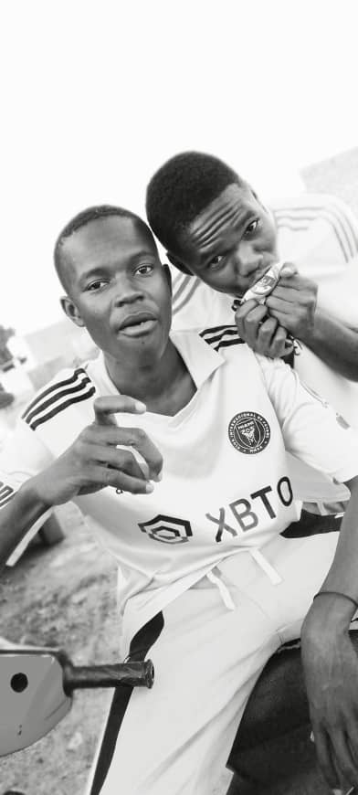
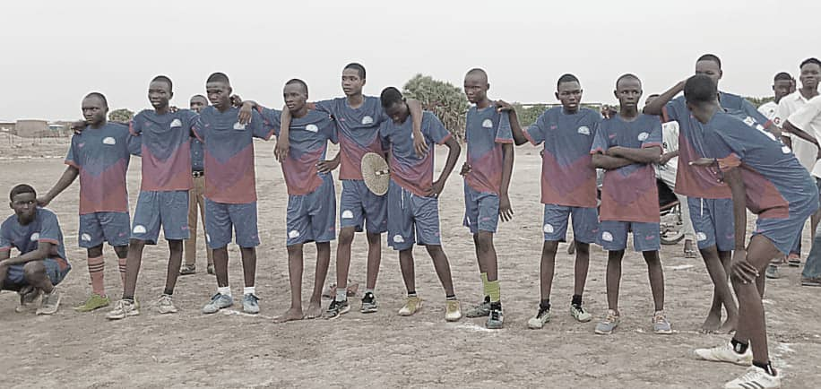
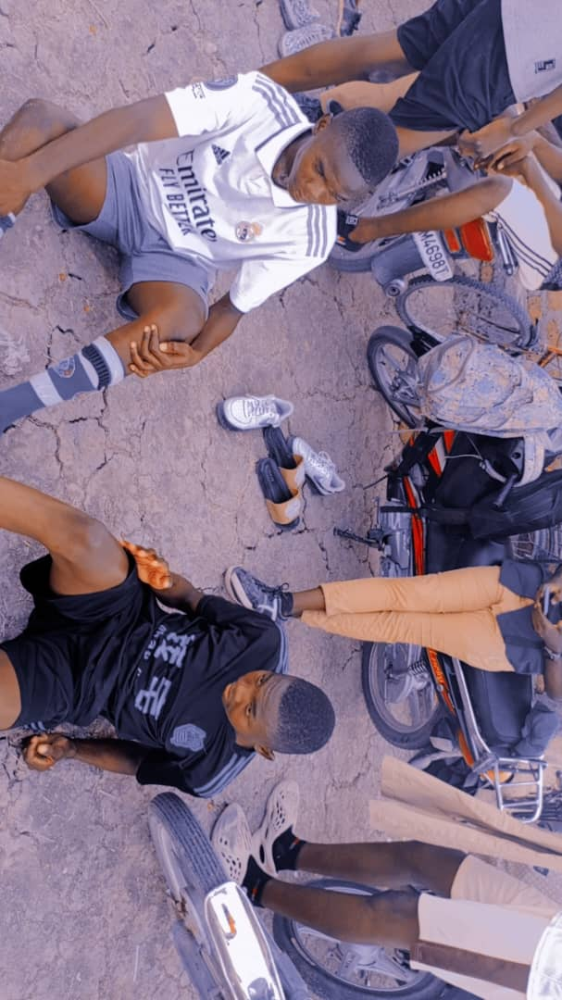

Images et Explications du choix de mon loisir
Comme je l'avais dit dans la page précédente c'est depuis tout petit que le football m'a impréssionné cela etait un honneur pour moi de pratiquer ce sport magique que beaucoup de membres de me famille ainsi que mon entourage le pratique dans le football, j'ai appris beaucoup de choses et j'ai gagné aussi des trophées notamment l'année passée avec ma classe de où l'on avait gagné l'interclasse devenant ainsi les champions de notre établissement (COMPLEXE SCOLAIRE SAINT FRANCOIS XAXIER). Je ne pratique pas ce beau loisir vain c'est pour cela que je vais vous illustrer nos beaux moments avec des photos des vidéos et des audio afin de vous faire vivre ce sport passionant.voici quelques petites informations visuelles
Cette image est une image tirée de notre fianle de l'an passée que je venais de souligner ci-haut donc prière de regarder avec attention et analyse l'image
Je vous présente encore une autre image de mon coéquipier et célébrant notre but pendant la finale nous amenant à la gloire absolue. 
une image d'une mi-temps pendant un match amical